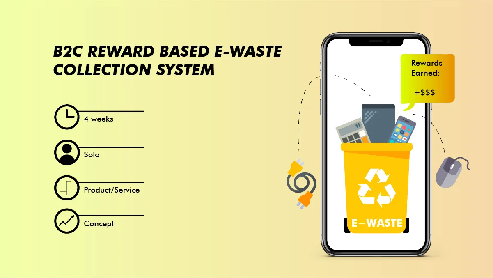
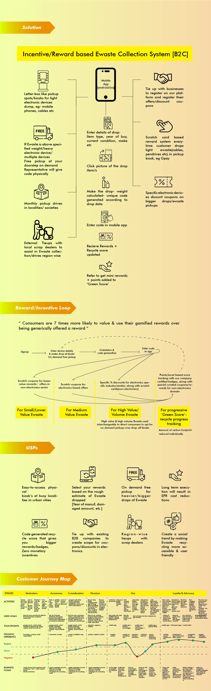
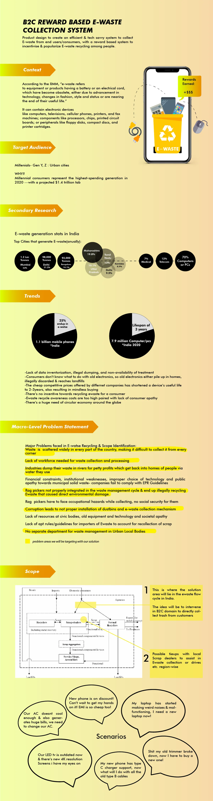

A concept for a B2C reward-based e-waste collection ecosystem — reframing recycling from moral homework into a gamified, rewarding daily behaviour, with an end-to-end system designed across consumer, collection point, processor, and retail partner.

The global e-waste story is, on the surface, an infrastructure story — not enough collection points, not enough recycling plants, not enough regulatory teeth. That framing produces infrastructure solutions: build more bins, open more facilities, legislate harder.
Zoom in, though, and the more stubborn gap is upstream of all of that. The consumer already knows e-waste matters. The consumer already has a dead phone, an old charger, a broken remote sitting in a drawer. The consumer does not recycle it — not because no recycler exists, but because the friction-to-reward ratio for the individual act of recycling a single object is wrong. There is a lot of friction (where do I take this? when? will they take it? what do I get?) and almost no reward (a small civic glow, maybe).
This is a classic Fogg Behaviour Model failure. BJ Fogg's formulation — B = MAT, Behaviour = Motivation × Ability × Trigger — captures it cleanly: motivation exists, but ability (how easy is the action?) is low and triggers (what reminds me?) are absent. Either the behaviour gets easier, or it gets better rewarded, or it doesn't happen.
A rewards-based e-waste system directly addresses both axes. It raises ability by shrinking the question to "where's the nearest drop point on my app?" and it raises motivation by making the reward immediate, visible, and tangible — not an abstract environmental contribution measured in someone else's spreadsheet.
"Gamify it" is often design shorthand for "add points and a leaderboard." That shorthand wastes the actual mechanism. The thing that makes gamification work — when it works — is that it installs variable, visible, earnable reward structures around behaviours that previously had none. It changes the behaviour's environment, not the behaviour itself.
For e-waste recycling, the design question was: what motivational drives are currently being served, and which ones are being starved? Running the same Octalysis lens used in other case studies in this portfolio surfaces the diagnosis clearly:
The system design had to install functional loops on Drives 2, 4, 5, and 7 — and do it without hollowing out Drive 1, because the meaning of the act must survive the rewards added on top of it. Deci & Ryan's Self-Determination Theory warns about the overjustification effect: pay someone to do something they already valued intrinsically and they may value it less. So the rewards layer had to be framed as bonus, not as payment. Caring is already the reason. The app is a side-channel of delight.
A B2C reward-based collection system isn't a single-actor product — it's a multi-stakeholder ecosystem, and the design has to hold the flow of value, the flow of material, and the flow of information across every hop. These three flows don't move in parallel. Material flows from consumer outward; value flows back; information orchestrates both.
The platform sits in the middle. Its job is to make every actor's value flow legible — so that the consumer sees their impact, the collection point sees their volume, the processor sees their feedstock, and the retail partner sees their customer acquisition. If any one of these actors can't see what they're getting, they leave, and the loop breaks.

The reward loop is engineered along Nir Eyal's Hook Model — trigger → action → variable reward → investment — repeating until the behaviour becomes habit. Each hop matters:
The system also has an explicit micro-nudge layer on top, informed by Thaler & Sunstein's nudge theory — choice architecture that makes the recycling action the default path rather than the effortful one. App notifications surface drop points that match the user's existing routes; gentle reminders tie in with device-end-of-life signals (battery health, OS-update-refuse); default share prompts after a successful drop let the user post their impact socially without extra steps.

The customer journey maps the emotional and functional beats across the full arc — discovery, first drop, first reward, repeat behaviour, advocacy. Each hop in the map is annotated with the friction cost, the motivation available, and the reward visible, because those three together determine whether the user advances or stalls.
The design specifically attends to three high-risk moments in the journey. First drop is the moment where the system is on trial — if the user's first experience is confused or unrewarded, the second never happens. First redemption is where abstract points become real value — this transition has to feel celebratory, not transactional. And long-gap return — a user who recycled 3 months ago and is now back — has to be re-onboarded without friction and re-rewarded without condescension.
As a four-week concept project the output is not a shipped product. What the sprint produced is something narrower and arguably more useful: a system design that could be picked up and built, with the behavioural and economic logic already stress-tested against real frameworks.
Concept work is where most "gamified sustainability" proposals fall over. The reward mechanic gets designed, but the multi-stakeholder ecosystem that has to carry the rewards doesn't — and without the collection-point economics, the processor's feedstock reliability, and the retail partner's footfall calculus, the whole thing is a poster about an app. The work here deliberately held the full system in view, because the consumer-facing reward loop is only the visible surface of a four-actor economy that has to actually balance.
The theory layer makes the design defensible. Fogg's Behaviour Model gives the friction-vs-motivation argument structure. Octalysis locates which motivational drives are starved. The Hook Model describes the loop mechanism. Nudge theory describes the micro-architecture. Self-Determination Theory gives the warning about overjustification. Without these, a reward-based recycling concept is a vibe; with them, it's a system you can argue about.
This was also the earliest piece of gamified-system design in the portfolio — the Octalysis audit that reappears in the Collection System case study and the Research Strategies toolkit has its roots in the analysis done here. Behaviour-change gamification across a multi-actor ecosystem turned out to be the recurring design skill, expressed across radically different domains: e-waste, casual word games, wedding-themed match-3, match-3 themed around travel, narrative RPGs. The substrate changes; the underlying framework doesn't.